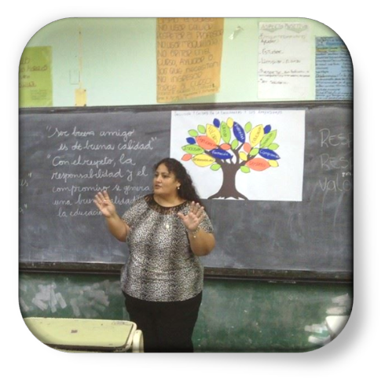
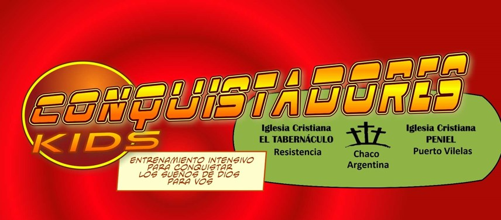

Mujer, 47 años, profe de Matemáticas, agente judicial, amante del mundo informático y teóloga.
Te invito a visitar mi perfil donde muestro mis áreas de interés y experiencia de vida.
Matemáticas y Docencia
Formación Académica
- Profesora de Nivel Secundario en Matemática (Instituto San Fernando Rey, 2013)
- Especialista en Orientación Educativa y Tutoría (Terras, Corrientes)
- Especialista en Aprendizajes con TIC (Terras, Corrientes)
- Diplomatura Universitaria en Derecho Docente(2021)
- Diplomatura Universitaria en Derecho Docente y Gestión Holística (2023)
- Cursos de formación: Ministerio de Ciencias y Tecnología: La Resolución de Problemas en Matemáticas (2022)
Experiencia
14 años ejerciendo la docencia en el Sistema Educativo Chaqueño. Algunas instituciones:
- UEP Nº4 “Rayos de Luz” (2005-2014), Resistencia, Chaco
- ESS Nº17 Puerto Tirol, Chaco (2014-)
- EES Nº164 Anexo Güiraldes, Resistencia, Chaco (2014-2017)
- EES Nº61 “Pte. Arturo Illía”, Barranqueras, Chaco (2014-2017)
- ESS Nº88 “Libertador Simón Bolívar”, Resistencia, Chaco
- EES Nº 93 “Mempo Giardinelli”, Resistencia, Chaco (201-2018)
- EES Nº68 “María Elena Walsh”, Resistencia, Chaco (2017)
Proyectos de trabajo
Visita Álgebra Maravillosa
Justicia
Formación Académica
- Curso de Ingresantes (Centro de Estudios Judiciales del Poder Judicial del Chaco, 2017)
- Curso de Fuero Civil Nivel 1 (Centro de Estudios Judiciales del Poder Judicial del Chaco, 2018)
- Diplomatura Universitaria en Derecho Docente (Facultad de Derecho, Universidad Nacional del Nordeste, 2021)
- Curso de posgrado Práctica Profesional en Derecho Civil, Comercial y Familia” (Facultad de Derecho, UNNE y Fundación Fundarte, 2021)
- Diplomatura Universitaria en Secretariado Judicial (Facultad de Derecho, UNNE y Fundación Formarte, 2020)
- Diplomatura Universitaria en Derecho Docente y Gestión Holística (Facultad de Derecho, UNNE, 2023)
- Curso Anual Provincial Fuero Civil y Comercial, Centro de Estudios Judiciales del Poder Judicial del Chaco, 2022)
- Cursos de Actualización varios relacionados con el trabajo remoto y la implementación de la aplicación web IURE, Centro de Estudios Judiciales del Poder Judicial del Chaco, 2021
Experiencia
- Escribiente en Poder Judicial del Chaco, Fuero Civil y Comercial, Materia: Ejecuciones Monitorias. 2017 hasta la actualidad.
Calculadora de Interés sobre Tasa Judicial
A continuación un mini proyecto de aplicación de lo aprendido en el curso. Permite calcular los intereses a retener en concepto de Tasa de Justicia impaga, teniendo en cuenta la multa correspondiente.
Calculadora de Tasa de interésInformática aplicada
Formación Académica
- Técnica Universitaria en Informática Aplicada (Facultad de Ingeniería, UNNE, 2001)
- Cursos varios Word, Excel, Autocad, Visual Basic, Centro de Estudiantes, Facultad de Ingeniería, UNNE, 1998-2001)
- Especialización Superior en Aprendizajes con TIC(Instituto Terras, Corrientes, 2016)
- Informatorio Chaco Etapa 1 y 2 (2021)
- Argentina Programa #Sé Programar(2021)
- Inglés para Desarrolladores(Polotic Misiones, 2021)
Experiencia
La experiencia en el área de Informática Aplicada estuvo relacionada con la docencia:
- Diseño y mantenimiento de Revista electrónica para el departamento de Lengua y Literatura de la Escuela José Hernandez, Barranqueras, Chaco (2000-2001)
- Enseñanza de Habilidades básicas Ofimáticas Facultad de Humanidades, UNNE, 1999
- Profesora de TIC (4º año UEP Nº4, 2007 a 2014)
- Profesora de Tecnologías de Gestión (aplicaciones para el diseño y la gestión de empresas)
Proyecto de Aplicación
Examen opción múltiple y completar. Botón enviar para calificar y determinar condiciones de regularidad Condiciones de regularidad >6 aprobado >4 debe realizar un trabajo monográfico sobre un tema a elección para recuperar Else debe cursar clases de apoyoTeología Práctica
Formación Académica
- Bachiller en Teología (Instituto Bíblico Interdenominacional Argentino, Resistencia, 2004)
- Curso de Enseñanza a niños, Nivel I, II y III (LAPEN, Resistencia, años 2005, 2006 y 2007)
- Vida Abundante (Sean, Resistencia, 1998)
- Teología ministerial (IETE, 2010)
- Capellanía hospitalaria y en contextos de encierro (FIET, Resistencia, 2018)
- Compendio de Teología Pastoral (SEAN: 1999, FIET:2019 y 2021)
Experiencia
- Trabajo en el área de niñez y adolescencia, merenderos, enseñanza bíblica, en Asociación Civil Iglesia Rayos de Luz, Resistencia y Samuhú, 1987 a 2011
- Trabajo misionero con la niñez, IBIA, Resistencia y Villa Río Bermejito (y zonas aledañas), 1999 a 2005
- Ministerio Conquistadores Kids, Asociación Civil Peniel, Puerto Vilelas y Resistencia, 2017 hasta la actualidad.
Visita Conquistadores Kids:
